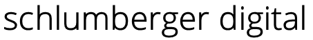

404
Diese Seite gibt es hier nicht.
Die Adresse ist falsch geschrieben oder der Inhalt wurde verschoben.
Diese Seite ist wie ein Einhorn: Alle reden davon, gesehen hat sie keiner.

404
Die Adresse ist falsch geschrieben oder der Inhalt wurde verschoben.
Diese Seite ist wie ein Einhorn: Alle reden davon, gesehen hat sie keiner.